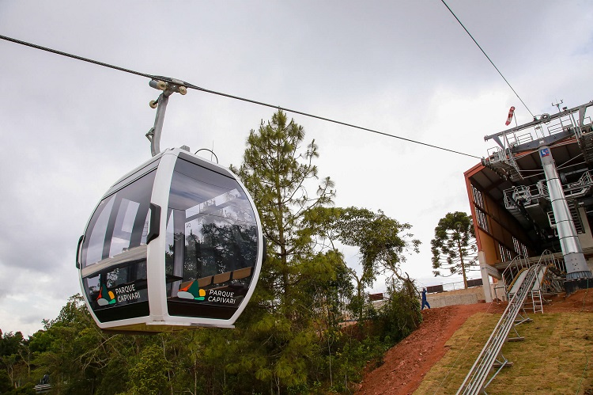

Campos do Jordão

Campos do Jordão é um município do interior do estado de São Paulo, localizado a pouco mais de 170km da capital do estado.
A cidade é chamada de "Suíça Brasileira", devido à arquitetura local de forte influência européia e é muito procurada principalmente durante o inverno, onde, junto com outros 14 municípios paulistas, são chamados de estâncias climáticas.
Estância turística é um título concedido pelo governo de São paulo a municípios que apresentam características turísticas e determinados requisitos como condições de lazer, recreação, recursos naturais e culturais específicos. Esses títulos podem ser consideradas estâncias turísticas, balneárias, climáticas e/ou hidrominerais. No caso das cidades consideradas estações climáticas, como Campos do Jordão, elas recebem esse título observando determinados critérios relacionados ao clima e que precisam ser cumpridos, como por exemplo as médias de temperatura durante as estações do ano que tem que estar em até determinada temperatura conforme listado na página 3 desse documento disponibilizado pela Assembleia Legislativa do Estado de São Paulo (ALESP)
Aqui estão alguns pontos turísticos de Campos do Jordão que valem a pena serem visitados:
Capivari

Capivari é um local bastante famoso onde se concentram várias lojas e cafeterias da cidade. Completamente ao ar livre, é o local perfeito para quem quer comprar lembranças variadas, aproveitar a culinária da cidade e/ou até mesmo conhecer e aproveitar a vida noturna da cidade.
Estrada de Ferro Campos do Jordão (necessita ingresso)
Poucas são as cidades que dispõem de uma estrada de ferro para passageiros andarem em trens, mas Campos do Jordão é uma das poucas cidades privilegiadas onde o visitante pode aproveitar o passeio em uma... Maria Fumaça! E não só isso: um bondinho também!
Os veículos, populares no século passado, operam todos os dias em horários específicos (o bondinho com saídas de hora em hora das 10 às 17 e a Maria Fumaça somente aos sábados, domingos e feriados, também com horários específicos entre 11 e 17
Iceland (necessita ingresso)
Aberta o ano inteiro e com uma temperatura negativa, o Iceland é uma atração completamente de gelo. A visita dura cerca de 20 minutos e eles emprestam casacão e luvas para que aproveitem o passeio.
Lá dentro, é possível encontrar esculturas de gelo, iglu, um escorregador e até um bar!
Morro do Elefante
O Morro do Elefante, que é o destino final do teleférico do Parque Capivari, é um morro a quase 2 mil metros de altitude. Nele, o visitante tem uma vista privilegiada da cidade, além de poder visitar um parque com réplicas de animais e aprender mais sobre os mesmos. Não está claro se o local precisa de ingresso, mas lá tem uma área onde o visitante pode jogar uma moeda, que será recolhida e doada para instituições beneficentes todo dia 12 de agosto (que, curiosamente, é o Dia Mundial dos Elefantes)
Parque Amantikir (necessita ingresso)
Com mais de 700 espécies de plantas disponíveis e com designs que lembram espaços de turismo estrangeiros, o Parque Amantikir é um espaço de entretenimento junto a natureza que funciona todos os dias. Lá, você vai encontrar jardins floridos, lagos e até um labirinto. Além disso, o parque conta com um restaurante e uma loja de presentes
Parque Capivari (necessita ingresso)

O Parque Capivari é um local completo de entretenimento e lazer que conta com um lago, pedalinhos, praça de alimentação, entre outras atrações. Entre elas, está o teleférico que, além de proporcionar 3 minutos de uma vista aérea da cidade, leva diretamente ao mirante do Morro do Elefante. O parque também é pet-friendly. Ou seja: quem estiver com seus pets na hora da visita poderá aproveitar a visita acompanhado deles
(ATENÇÃO: animais de médio porte ou acima de 15kg PRECISAM DE INGRESSO para andar no teleférico e o limite máximo de peso para o animal é de 80kg. Animais de pequeno porte ou que pesem abaixo de 15kg são isentos de ingresso.)
Parque da Cerveja (necessita ingresso)
O parque da Cerveja, além de você visitar a fábrica de cerveja da cidade, tem várias áreas verdes, com cachoeiras, lagos, floresta e uma trilha que leva a um mirante, onde você pode ter uma visão panorâmica.
Para os "medrosos de plantão", CUIDADO: apesar da maior parte ser de concreto, há uma parte onde o chão É DE VIDRO, como daquelas pontes suspensas da Ásia que costumamos ver vídeos pela internet.
Prana Pôr do Sol (necessita ingresso)
Pra quem curte assistir ao pôr do sol, um dos melhores lugares para assistir à esse fenômeno é aqui. Além de contar com um restaurante e várias "áreas instagramáveis" (áreas próprias para o visitante tirar foto e postar no Instagram ou na rede social de sua preferência), ele fica situado próximo ao Prana Park, que também é um espaço verde onde o visitante pode andar a cavalo, fazer trilhas ou praticar atividades radicais (como descer a tirolesa ou andar em uma bicicleta aérea, que estará acoplada a cabos de aço a alguns metros do chão)
Romantik Dalen (necessita ingresso)
Campos do Jordão é um dos destinos mais populares para casais viajarem. Então, para quem estiver viajando com o amor da sua vida, vale a pena conferir esse espaço, criado propriamente para casais. Romantik Dalen conta, inclusive, com um espaço similar a outros espaços internacionais bastante populares (como a Pont des Artes, de Paris, que se tornou popular pela crendice de que casais que prendem cadeados na ponte ficam juntos pra sempre; uma estrada coberta com guarda-chuvas coloridos, que também existem em outras partes do mundo; ou uma capela inspirada nas capelas de Las Vegas, onde os casais podem renovar seus votos de casamento).
Claro: se você estiver viajando sozinho, pode visitar o local também